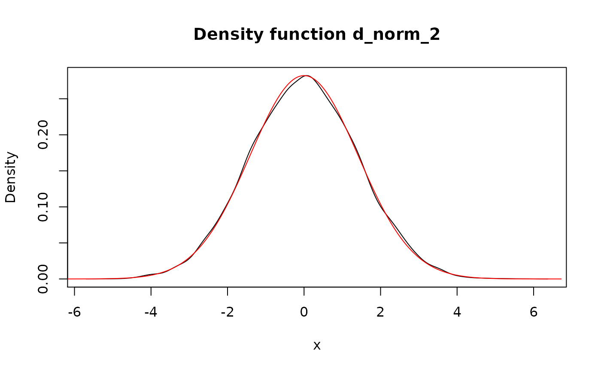

Perform a transformation of pdqr-function(s) (which assumed to be independent).
form_trans(f_list, trans, ..., method = "random", n_sample = 10000,
args_new = list())
form_trans_self(f, trans, ..., method = "random", args_new = list())| f_list | A list consisting from pdqr-function(s) and/or single number(s). Should have at least one pdqr-function (see Details). |
|---|---|
| trans | Transformation function. Should take as many (vectorized)
arguments as there are elements in |
| ... | Extra arguments to |
| method | Transformation method. One of "random" or "bruteforce". |
| n_sample | Number of elements to sample. |
| args_new | |
| f | A pdqr-function. |
A pdqr-function for transformed random variable.
form_trans_self() is a thin wrapper for form_trans() that
accepts a single pdqr-function instead of a list of them.
Class of output is chosen as class of first pdqr-function in
f_list. Type of output is chosen to be "discrete" in case
all input pdqr-functions have "discrete" type, and "continuous" otherwise.
Method "random" performs transformation using random generation of samples:
Generates a sample of size n_sample from every element of f_list
(if element is single number, it is repeated n_sample times).
Calls trans with all generated samples (in order aligned with
f_list). Note that output should be either numeric or logical and have
n_sample elements (one for each combination of input values in "vectorized"
fashion). So, for example, using sum directly is not possible as it returns
only single number.
Creates output pdqr-function. If output is logical, probability of
being true is estimated as share of TRUE in output, and boolean
pdqr-function is created (type "discrete" with "x" values equal to 0 and 1,
and probabilities of being false and true respectively). If output is
numeric, one of new_*() (suitable for output class) is called with
arguments from args_new list.
Method "bruteforce":
Retypes input pdqr-function to "discrete" type (using "piecelin" method).
Computes output for every combination of "x" values (probability of which will be a product of corresponding probabilities).
Creates pdqr-function of type "discrete" with suitable new_*()
function.
Possibly retypes to "continuous" type if output should have it (also with "piecelin" method).
Notes about "bruteforce" method:
Its main advantage is that it is not random.
It may start to be very memory consuming very quickly.
It is usually useful when type of output function is "discrete". In case of "continuous" type, retyping from "discrete" to "continuous" might introduce big errors.
Used "discrete" probabilities shouldn't be very small because they will be directly multiplied, which might cause numerical accuracy issues.
Pdqr methods for S3 group generic functions
for more accurate implementations of most commonly used functions. Some of
them are direct (without randomness) and some of them use form_trans()
with "random" method.
form_regrid() to increase/decrease granularity of pdqr-functions for method
"bruteforce".
Other form functions:
form_estimate(),
form_mix(),
form_regrid(),
form_resupport(),
form_retype(),
form_smooth(),
form_tails()
# Default "random" transformation
d_norm <- as_d(dnorm)
## More accurate result would give use of `+` directly with: d_norm + d_norm
d_norm_2 <- form_trans(list(d_norm, d_norm), trans = `+`)
plot(d_norm_2)
#> Density function of continuous type
#> Support: ~[95.80216, 104.85072] (511 intervals)
## Output of `trans` can be logical. Next example is random version of
## `d_norm >= 0`.
form_trans(list(d_norm, 0), trans = `>=`)
#> Probability mass function of discrete type
#> Support: [0, 1] (2 elements, probability of 1: 0.4952)
# Transformation with "bruteforce" method
power <- function(x, n = 1) {
x^n
}
p_dis <- new_p(
data.frame(x = 1:3, prob = c(0.1, 0.2, 0.7)),
type = "discrete"
)
p_dis_sq <- form_trans_self(
p_dis, trans = power, n = 2, method = "bruteforce"
)
meta_x_tbl(p_dis_sq)
#> x prob cumprob
#> 1 1 0.1 0.1
#> 2 4 0.2 0.3
#> 3 9 0.7 1.0## Compare with "random" method
p_dis_sq_rand <- form_trans_self(p_dis, trans = power, n = 2)
meta_x_tbl(p_dis_sq_rand)
#> x prob cumprob
#> 1 1 0.1010 0.1010
#> 2 4 0.1998 0.3008
#> 3 9 0.6992 1.0000
# `form_trans_self()` is a wrapper for `form_trans()`
form_trans_self(d_norm, trans = function(x) {
2 * x
})
#> Density function of continuous type
#> Support: ~[-7.70272, 7.89026] (511 intervals)